1
2
3
Let's get you setup in less than 5 minutes!
You'll have a custom website after finishing this setup.
1
2
3
Choose your social media profiles
Add the social media profiles you'd like to be displayed on your website.
Available Social Media Platforms
Dribbble


Blogger

Discord

Youtube


Currently Added
1
2
3

That's it!
You'll have more customization in your dashboard.